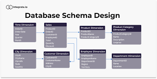
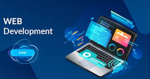
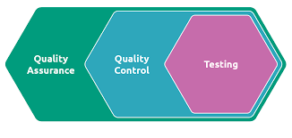

Planning & Strategy
To maximize the outreach of our clients with the
website development and investment, it is important
to undergo a detailed market analysis, study the
target audiences, business objectives and develop an
integrated strategy.
Our highly expert web professionals dedicated work
with the clients to understand their business goals
and opportunities on the web.
After a thorough analysis, we educate our clients
about the ongoing digital trends and metrics of
success with website development for the targeted
niche. The end result is a valuable strategy and
planning to map the custom website development
process and business goals in line.
Scope & Clarification
Our next objective is to pinpoint online goals and
extend the strategic plan into a comprehensive
business scope to succeed in web development.
We offer clear plans to work in phases of development
to ensure the project follows the client’s
requirements and budget. The bottom line is, we draw
a roadmap to achieve your website development
objectives before beginning the development process.
UI/UX Design and Prototyping
The very first thing that attracts a new visitor and
allows holding back to browse more is the look and
feel of it. We have hired a professional UI/UX team
to deliver creative wireframe design and prototypes
before we kick-off the development procedure.
Our design team incorporates premium wireframe tools
for drawing highly- interactive and domain-specific
UI UX to capture the user's attention and boost
website traffic.

Database Design
The organized database of your business allows you
to easily update and find accurate information. One
of the most important yet ignored tasks in the
stages of web development is Database Design.
Way To Code properly follows the industry-standard
principles of database design and accommodates the
right database model to fetch information from the
web application.
Website Development
This is the most crucial step in the entire phase of
website development. It involves every bit from
developing code to optimization.
Our team of web developers focuses on the program
elements like version, page code, title, metatags,
snippet, and page description to the website's
optimal efficiency and page performance on the
search engine. The goal for code optimization is to
follow the guidelines of W3C (World Wide Web
Consortium) and make the site faster, responsive,
and interactive with necessary code scripting.


QA/AT Testing & Report
Before the delivery of the project and final launch,
Quality Assurance is the testing process to ensure
whether the product fulfills the imperative list of
features and requirements.
Way To Code has hired a team to conduct the
step-by-step QA process that includes product
performance analysis, bug reporting, design testing,
functionality testing, and monitor the process of
QA/AT testing.
Launch
Our team undergoes three stages for the final website
launch namely: Testing Launch ,Website Staging
Launch ,Product Launch.
In the Testing launch, we allow a specific set of the
intended audience to calculate the website KPIs to
gain precise insights about the website and its
behavior.
Website Staging Launch involves testing major
features in a secure environment and undertakes the
process of bug fixation if any.
The Product launch phase is a coordinated process of
website promotion and campaigning, serving the
purpose of the company and drive momentum across the
market of the industry.
AMC (Annual maintenance contract/
Monthly/Quarterly/Annual)
A website is never entirely done even after the
launch. Any new website needs to be kept under
observation to keep a tab on Google Analytics along
with timely maintenance and updates.
Way To Code services offer Annual/Monthly/Quarterly
Maintenance Contracts to check up on your website
health & performance for keeping it fresh for the
visitors. The maintenance services comprise key
deliverables which are tracking website traffic,
conversion rates, bug fixing to reduce bounce rates,
ensure maximum uptime, quick backup, and working up
to date.